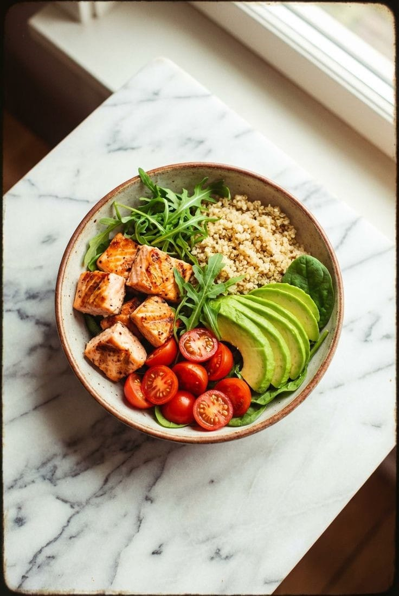
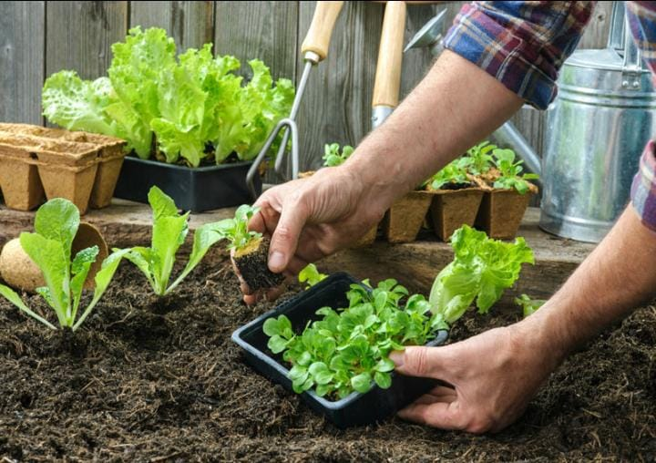

RecetasEspacios verdes y cosecha fresca para el hogar
Somos una marca chilena orientada al bienestar y la pasión por tu hogar.

Cosechando bienestar:
La misión de Huerto Hogar
En Huerto Hogar, ponemos nuestro corazón y alma en cada proyecto. Te ofrecemos soluciones integrales para crear el entorno que siempre soñaste, desde el diseño de un pequeño huerto de balcón hasta la transformación completa de tu hogar para integrar la naturaleza.
No solo diseñamos, te ayudamos a cultivar tu propia comida y bienestar. Establecidos para llevar la frescura del campo chileno directamente a tu puerta, nuestra reputación se basa en la innovación, la calidad y el servicio excepcional.

Ver nuestros huertos